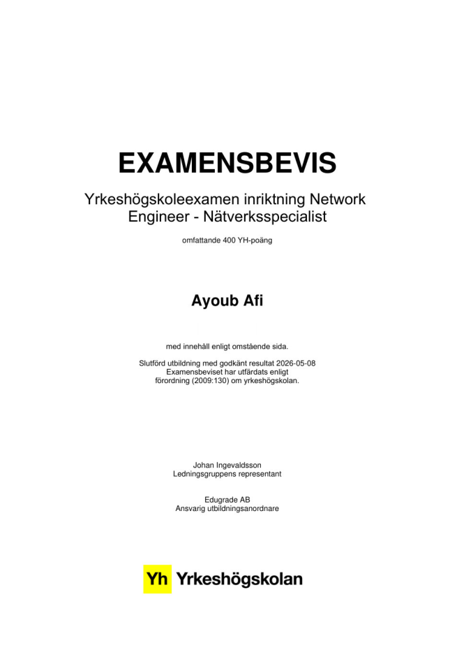
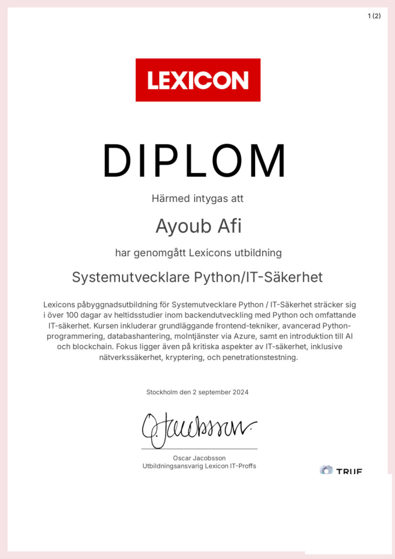
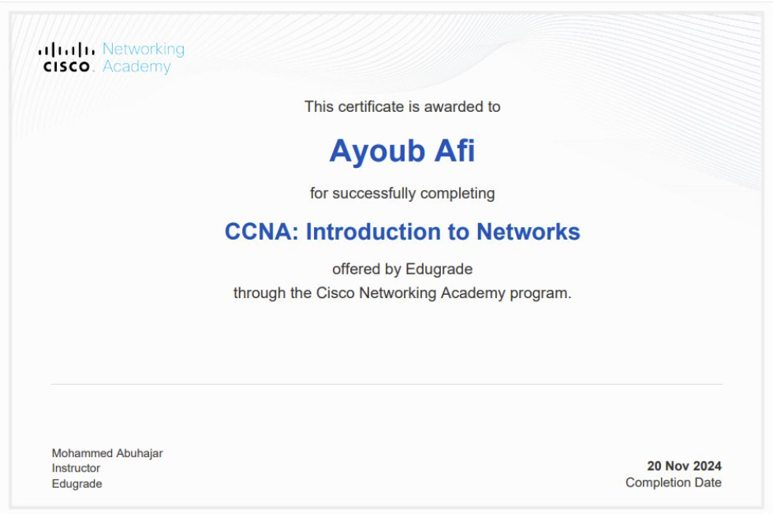
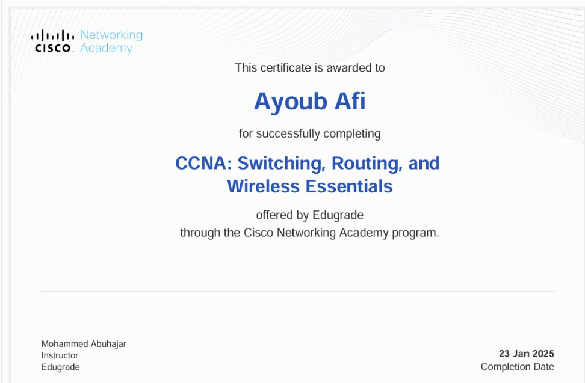

Networking & Infrastructure
Build, segment and troubleshoot networks, with attention to availability, performance and clear documentation.
Just because a connection is up doesn’t mean everything is working. I’ve always been curious about what happens behind the scenes, from the physical cable through the network to the security and applications people rely on. When something goes wrong, I want to understand why, not just find a quick fix. And when everything works, I still wonder if it could work better. That’s what drives me: curiosity to dig deeper, creativity to see new possibilities, and the determination to turn ideas into real solutions. For me, understanding how things work is only the beginning. The exciting part is finding ways to make them better.

And I wouldn't change that. Working with people gave me a reason to build things; learning technology gave me the tools.
The Question
If you had two candidates in front of you, one who spent a career in a single field and another who worked in factories, tourism, ministries, politics, NGOs, sales, marketing, and social entrepreneurship, who would you hire?
I know it's a hard choice. But I'm the second candidate, and here's what that journey taught me.
I've seen how a factory floor breathes, how a traveler decides to trust a stranger, how decisions move through a ministry, how a campaign changes minds, how a sale can be won or lost in one sentence, and how a small idea can become something meaningful with limited resources.
I learned to read people before I learned to read code.
Every one of those places depends on technology, and when something stops working, someone is waiting. A factory manager whose production line has stopped. A tour operator whose booking system goes down in peak season. A ministry that can't afford to lose a single file. A campaign team facing a deadline without a connection.
I've experienced those environments from the inside. So when someone tells me something is urgent, I understand what's at stake behind it.
That's why I start by listening, then investigate across the technical layers, from the physical connection to the application, and verify the solution rather than guess. My network labs, my Carthago security monitor, and my internship at IoT Open are where I put that approach into practice.
Along the way, I found where I belong. IT is what makes me look forward to each new day. It's the work I'd choose even if no one asked me to.
So the real question is: do you want someone who knows one road well, or someone who has walked many and deliberately chosen yours?
Build, segment and troubleshoot networks, with attention to availability, performance and clear documentation.
Approach incidents and changes systematically, with risk awareness, recovery planning and meaningful verification.
Use scripting, Ansible and Terraform practices to reduce repetitive work and make operations reproducible.
My independently developed C#/.NET desktop monitor, built to bring network capture, security signals and diagnostic context into one place. I am actively refining its reliability and usability.
Designing capture, event correlation, security-rule organization, diagnostics and a WPF interface around actionable evidence.
Independent, public-source project under active development. Registered rules are not a claim of validated detection accuracy.
Survey context: These statistics come from a survey of 506 security leaders and practitioners at organizations with more than 500 employees, reported in Sumo Logic’s 2026 Security Operations Insights Report. Sumo Logic is a SIEM vendor.
An independent business intelligence platform I am developing to connect market research, company discovery and opportunity assessment in one workflow. ASTERRA is designed to investigate organizations and assess their fit, needs and timing. KNOX adds governance through permissions, approvals and evidence-backed decisions.
Designing ASTERRA for research and market intelligence, with KNOX for permissions, reviews and accountable actions.
Independent product in active development. Capabilities are being validated in stages, not presented as a launched service.
Frontend and API integration work connecting device data, analytics, alarms and control flows to an existing platform.
Designed unified user workflows and modular GPS, alarms and visualization components without changing the existing database.
LIA internship at IoT Open, November 2025 to April 2026. Work integrated with an existing platform.
Research context: Murty, Dadlani & Das, Harvard Business Review (2022) studied 137 users across three companies. The 28% error-rate comparison comes from Workplace Insight's report (2018) on Pegasystems research. These are external findings, not measured productivity or error-rate improvements at IoT Open. The 83% figure describes the reduction in separate windows (6 to 1).
I built a read-only Cisco IOS assessment workflow in GNS3 using Ansible. It discovers device state, backs up the running configuration, reviews security settings and a Cisco field notice, and produces evidence for a human to assess before any change.
Built separate discovery, backup, security assessment, risk review and advisory playbooks, plus reporting templates and an evidence manifest.
Read-only educational lab. No IOS upgrades, configuration changes, automatic approvals or production deployment. The manifest is run separately from site.yml.
A risk-aware change and patching workflow connecting discovery, review, simulation, delivery and learning.
Mapped risk scoring, approval, Terraform plans, Ansible check mode, rollback and post-change evidence into one workflow.
Methodology and automation design, adaptable to ITIL 4, pm3 and Agile. Not an organization-wide rollout claim.
Application hosting practice on Debian/Ubuntu, using Nginx, DNS, Git and CI/CD workflows.
Configured Linux hosting, web serving, DNS and Git-based deployment workflows with repeatable operational checks.
Personal VPS practice with Debian and Ubuntu, focused on deployment and basic service reliability.
Swipe to choose a lab
Three switches, two EtherChannels, three VLANs and one verified host-to-host test.
Swipe sideways to explore the full topology. Tap a device or cable for its details.
Solid lines are physical cables; highlighted traffic is illustrative.
My process is a starting point, not a fixed requirement. I can work with ITIL 4, pm3, Agile or another method already used by the team.
Align incident handling, change enablement and continual improvement with clear risk review, traceable action and verified service outcomes.
Respect the organization's management objects, priorities, responsibilities and decision forums so improvements have a clear owner.
Work in short cycles, review results with the team and adjust priorities as needs change.
Formal training supported by hands-on labs and independent projects.
JENSEN Komvux | El- och energiprogrammet
Cisco networking, routing and switching, network administration, security, system configuration and troubleshootingLexicon
Python backend development, APIs, databases, system integration and IT securityEdugrade
Infrastructure, network operations, routing, switching and IT service processesCode Institute
Web application development, version control and full-stack fundamentalsSupporting evidence of completed training. Public diploma copies have personal identifiers withheld.

Yrkeshögskoleexamen, 400 YH credits
View public diploma (PDF)
Development, security and cloud studies
View public diploma (PDF)
CCNA curriculum, course completed
View certificate
CCNA curriculum, course completed
View certificateI have studied Cisco networking curricula, including CCNA and CCNP topics. The Cisco credentials shown above are Networking Academy course completion certificates, not CCNA or CCNP professional certifications.
Open to junior network engineering and infrastructure operations roles, technical conversations, and thoughtful feedback on my work.